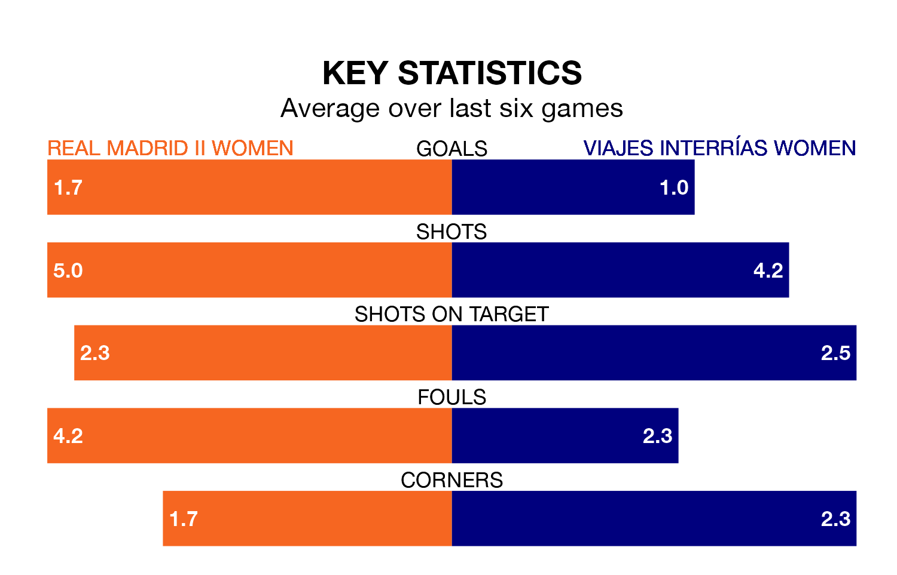

Two of the Segunda Federación Femenina's top sides face each other in Sunday's late kick-off, when table-topping Real Madrid II Women host fourth-placed Viajes Interrías Women.
Madrid II Women have picked up 19 wins and four draws from 25 games so far this season, and sit seven points above the visitors going into the 5pm match.
Viajes Interrías, meanwhile, have won 16 and drawn six, picking up 54 points.
With 42 goals in 25 games so far this season, Madrid II Women are scoring more than average in the league with 1.7 goals per game. And they are conceding fewer than average, letting in 11 goals at a rate of 0.4 per game.
Viajes Interrías are also above average scorers, with 1.7 goals per game, compared to a league average of 1.3. They have conceded 1.0 goal per game.
The home team are in good form in the Segunda Federación Femenina, with four wins and a draw from their last six games.
With three wins and two draws over that period, the visitors' form is slightly worse – they have taken 11 points from 18, compared to Madrid II Women's 13.
Madrid II Women's last match was on March 24, a 1-0 win against Real Oviedo Women, with getting the goal for Madrid II Women.
Viajes Interrías drew 0-0 with Atlético Madrid III Women last time out, on March 23.
Updated: 16:41 (UTC), 04/04/24